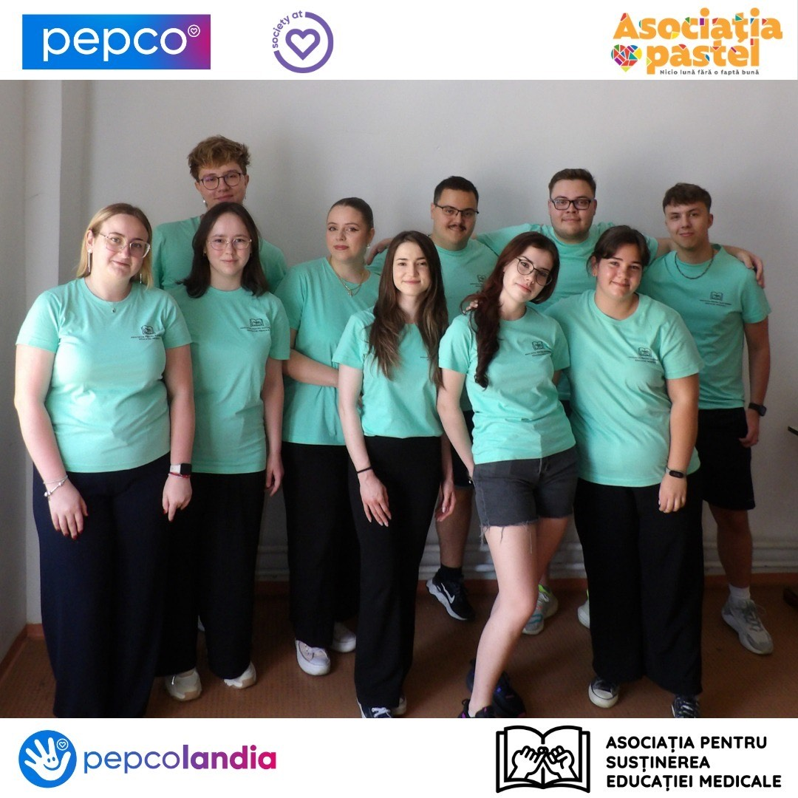
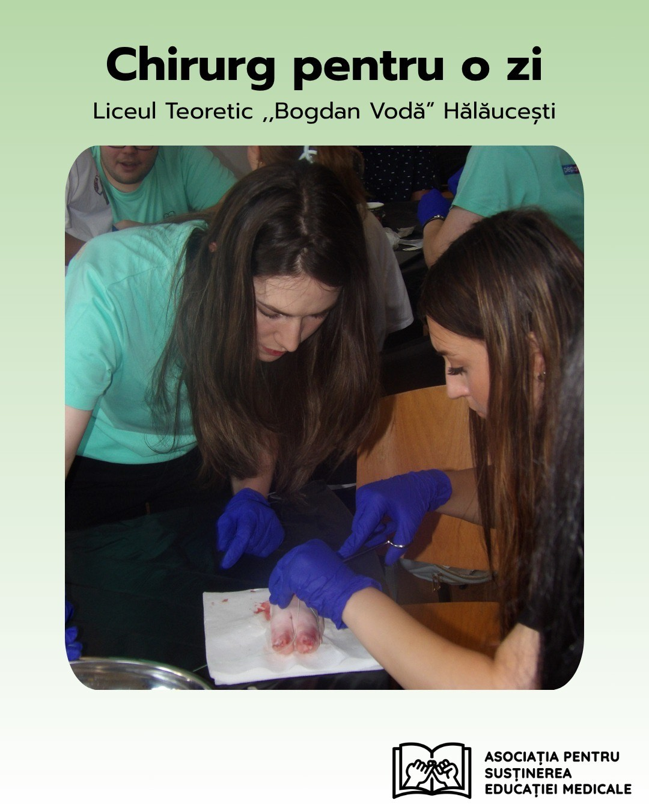
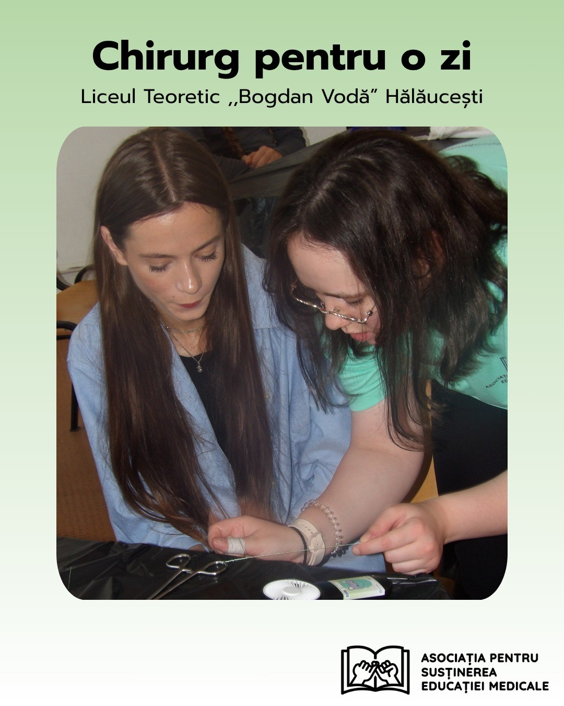
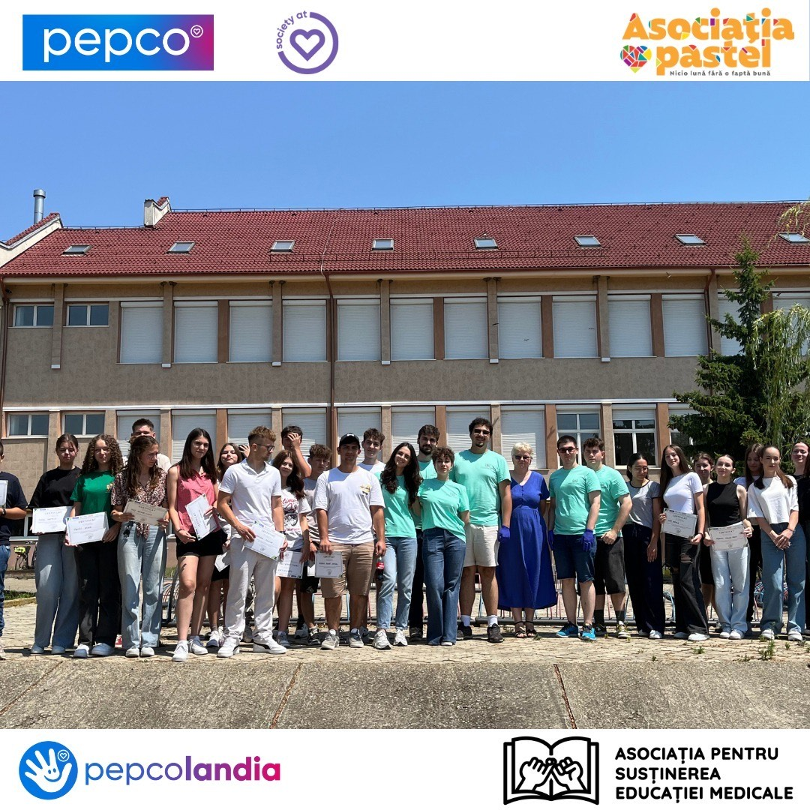
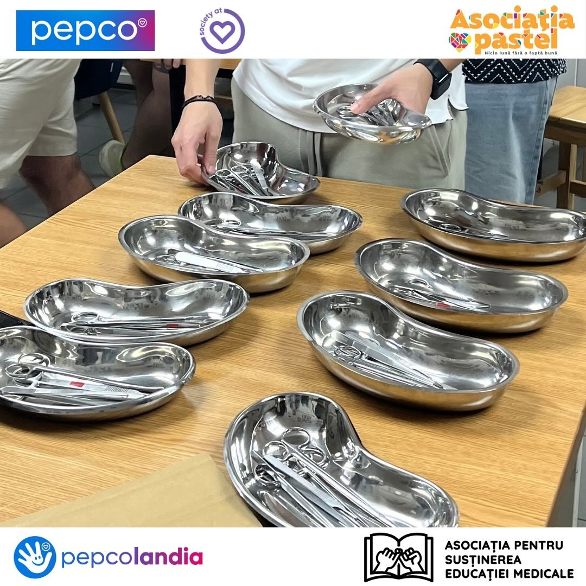
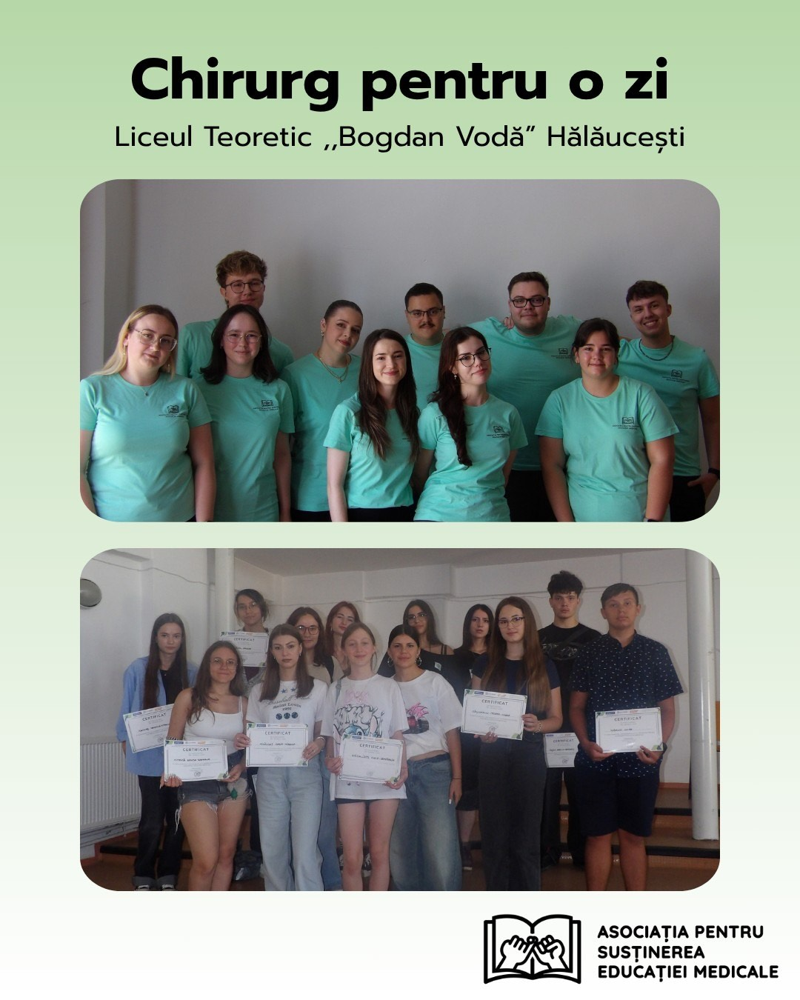

Chirurg pentru o zi
Orientare medicală pentru liceeni din mediul rural

Indicatori
Pe data de 8 iulie 2025, Asociația pentru Susținerea Educației Medicale, în parteneriat cu Societatea Studențească de Chirurgie din România – filiala Iași, a desfășurat proiectul „Chirurg pentru o zi”, un eveniment educațional și inspirațional dedicat elevilor de liceu.
În liceele din mediul rural, informația despre facultățile de medicină ajunge greu, iar contactul direct cu un student e rar. Am vrut să transformăm „nu e pentru mine” în „ce trebuie să fac ca să ajung acolo?”.
Unități școlare și locații
Activitățile s-au desfășurat în trei unități de învățământ din județele Iași și Neamț:
- Liceul Tehnologic „Sf. Ioan de la Salle” Pildești
- Liceul Teoretic „Bogdan Vodă” Hălăucești
- Liceul Teoretic „Vasile Alecsandri” Săbăoani
Desfășurare și activități
Proiectul a reunit 150 de elevi de liceu și a implicat peste 20 de voluntari, studenți la medicină, care au contribuit la organizarea și desfășurarea activităților.
Elevii au participat la sesiuni de orientare profesională în domeniul medical, susținute de voluntari, menite să ofere informații clare despre traseul universitar și cariera medicală. De asemenea, au avut loc workshopuri practice, în cadrul cărora participanții au învățat abilități de bază în chirurgie și au descoperit importanța colaborării în echipa medicală.
Prin această inițiativă, elevii au avut oportunitatea de a explora o carieră în domeniul medical și de a interacționa direct cu studenți pasionați de chirurgie, beneficiind de o experiență educațională unică.
Indicatori
- 3 sesiuni de orientare profesională
- 3 workshopuri cu tematică chirurgicală
- peste 20 de voluntari (studenți la medicină)
- 2 județe implicate
- 3 școli implicate
- 150 elevi informați
- 10 profesori implicați
Mulțumiri
Mulțumim voluntarilor, Școlilor gazdă și partenerilor noștri pentru sprijinul acordat în organizarea acestui eveniment. Sprijinul financiar și logistic a fost esențial pentru succesul activităților desfășurate.
Galerie foto






Parteneri și finanțare


Proiect finanțat de PEPCO România, în cadrul programului de granturi Pepcolandia 2025, gestionat la nivel național de Asociația pastel.
Susține un proiect ca acesta
Fiecare atelier are costuri reale: transport, materiale, echipament. Le raportăm pe toate.